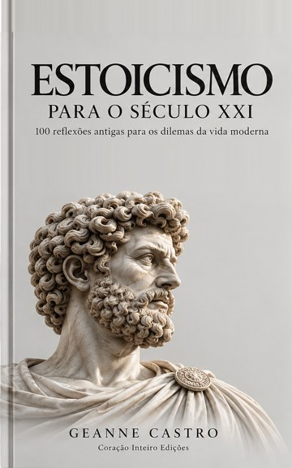

No iPhone, você também pode tocar e segurar a imagem e escolher “Salvar na Fotos”.

Escolha a frase que falou com você hoje e leve para o seu Instagram ou Status do WhatsApp.
Cada uma com a cena do dia a dia, o princípio estoico, uma pergunta e uma prática para hoje.
Quero o livro © Geanne Castro · Coração Inteiro Edições